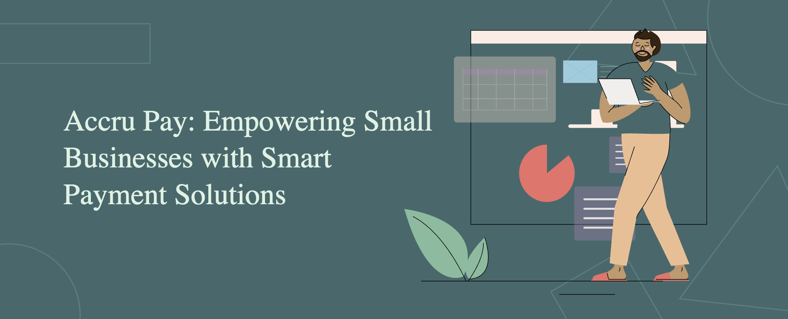
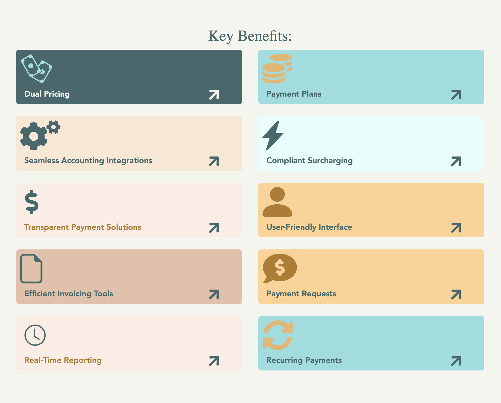
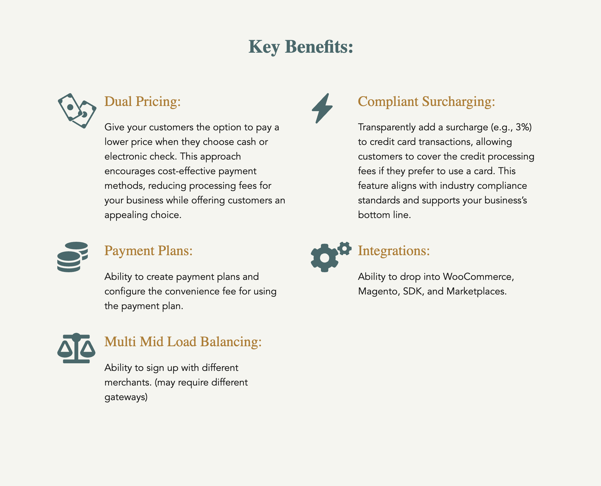
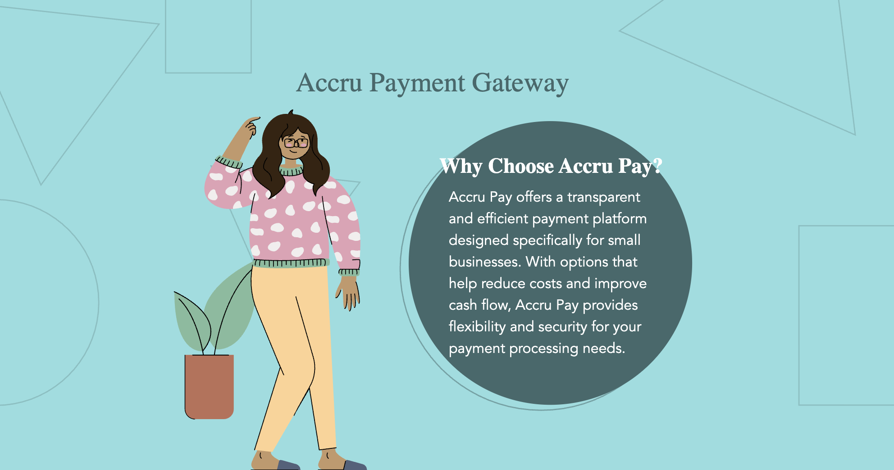

Global Payment Orchestration Platform
Designing resilient payment infrastructure for global businesses
Led product strategy, design direction, brand system, and developer experience for AccruPay, a recently launched developer-first payment orchestration platform helping businesses route transactions across multiple providers without being locked into one gateway.
Core POV: payment infrastructure should not collapse because one provider fails. AccruPay was designed to make routing, switching, and recovery feel simple enough for teams to trust, while keeping the technical logic credible enough for developers to adopt.
The platform gives merchants greater resilience, faster provider switching, clearer integration paths, and a stronger technical foundation for global payment independence.
Role Product Strategy, Design Direction, Brand System + Developer Experience
Client type B2B SaaS / Fintech Infrastructure
High-level impact Defined the product narrative, core journeys, brand system, developer onboarding, and launch-ready website experience from zero
Status Recently launched, with the product foundation now supporting early customer conversations, demos, and continued platform development
Context Payment routing, PSP switching, developer tools, and infrastructure resilience
Challenge
Payment infrastructure is often invisible until it fails. For businesses processing transactions at scale, reliance on a single payment provider creates operational risk, revenue loss, and limited negotiating power.
AccruPay needed to communicate a complex technical proposition in a way that felt credible to developers, clear to business leaders, and differentiated from heavier payment orchestration platforms.
The sharper problem: most payment products talk about flexibility, but the real business fear is interruption. If approvals drop, routes fail, or one gateway becomes unreliable, teams need control immediately, not after a rebuild.
The product challenge was to:
- Position payment routing as business resilience rather than a technical feature
- Translate complex infrastructure into simple product storytelling for developer and commercial audiences
- Create a visual system from scratch across brand, product, website, and marketing touchpoints
- Design for trust in a high-stakes category where reliability, compliance, and clarity are critical
- Support future product scale across documentation, pricing, onboarding, support, and dashboard experiences
- Clarify the payment flow across provider connection, routing logic, failover, retries, and transaction visibility
The design challenge: How do you make payment infrastructure feel simple, resilient, and credible without reducing the technical depth of the product?

Discovery & Insight
Turning early product thinking into a clearer proposition
Discovery focused on making the product legible. The early material positioned AccruPay around small business payment needs, but the stronger opportunity was to elevate the story from payment features to payment resilience.
I reviewed the early proposition, feature set, benefit framing, and visual direction to understand what the product was trying to communicate.
- Feature framing: identified recurring themes around pricing, payment plans, integrations, invoicing, reporting, and recurring payments
- Audience clarity: separated small business needs from the larger infrastructure story emerging underneath
- Product value: moved the narrative away from isolated payment tools and towards operational control
- Visual direction: assessed early illustrated and feature-led concepts to understand what felt credible, scalable, and ownable
- Strategic opportunity: identified resilience, routing, and provider independence as the stronger product territory
Outcome: discovery reframed AccruPay from a smart payment toolkit into a sharper infrastructure proposition built around control, continuity, and independence.




Strategic Direction
From generic payments to infrastructure resilience
This insight reframed the product entirely.
Instead of competing as another payment platform, AccruPay was positioned as a lightweight orchestration layer enabling teams to route, switch, and recover without rebuilding their stack.
This shift introduced three defining principles:
- Independence over dependency: businesses should not be locked into a single provider
- Speed over configuration: teams need to act immediately when payments fail
- Clarity over complexity: infrastructure should feel understandable without losing technical depth
This became the foundation for every design decision across product, brand, and experience.
Strategic stance: AccruPay should feel like a sharp infrastructure layer, not a bloated enterprise payments suite.

Approach
Translating strategy into a product, brand, and system
With a clear strategic direction, the work focused on making the platform feel both technically credible and operationally simple.
- Product narrative: defined a clear story around routing, switching, and recovery as core product behaviours
- Experience architecture: structured the platform across onboarding, provider connection, routing logic, and fallback handling
- Brand system exploration: explored identity directions grounded in connection, flow, and infrastructure signals
- Interface foundations: built reusable UI patterns for pricing, documentation, support, and dashboard modules
- Scalable system design: ensured the product could extend across marketing, developer tooling, and future platform features
The goal was not to simplify payments by hiding complexity. It was to structure complexity so teams could act quickly when revenue was at risk.
Deliverables
What I Designed
- Full product positioning around payment resilience, provider independence, and lightweight orchestration
- Brand identity system
- Logo exploration and refinement
- Sub-brand visual logic
- Colour, typography, iconography, and motion direction
- Developer-focused visual language
- Marketing website system covering homepage, why AccruPay, pricing, support, documentation, and demo pathways
- Developer onboarding flows including sandbox access, API key setup, mock PSPs, and routing rules
- Product UI foundations for cards, status modules, quick actions, and dashboard patterns
- Use-case architecture across e-commerce, financial services, healthcare, travel, marketplaces, and higher-risk categories
- Content strategy translating technical infrastructure into clear product and business value
- Launch-ready experience supporting the live site, investor conversations, customer demos, and next-stage product development
Product System
The AccruPay system was designed to support multiple user needs without fragmenting the experience. Business users needed proof, simplicity, and reassurance. Developers needed clarity, speed, and technical confidence.
Key system considerations:
- Clear hierarchy between commercial messaging and technical detail
- Reusable card systems for benefits, resources, pricing, support, and industry use cases
- Consistent CTA patterns across demo, documentation, sandbox, and support flows
- Soft visual gradients to make infrastructure feel more approachable
- Technical credibility through restrained layouts, documentation cues, and code-led content
- Flexible content patterns that could explain product value before the full platform UI matured
Result: A flexible visual and content system that can scale across product marketing, developer documentation, and platform UI.
Core flow: connect, route, recover
The developer experience was structured around a simple operational model: connect payment providers, define routing rules, process transactions, and recover quickly when a provider fails.
- Connect: add PSP credentials, configure API keys, and validate setup in sandbox
- Route: define logic by provider, geography, transaction type, cost, or availability
- Recover: support retries, fallback routing, and clearer visibility when payments fail
The goal was not to make payments look simple by hiding complexity. The goal was to structure complexity so teams could act quickly when money was on the line.
OUTCOMES
What This Enabled
- Recently launched product presence with a full brand, website, and product story live for early market conversations
- Clear product positioning for a complex payment infrastructure proposition
- Full visual and brand foundation created from scratch for a new fintech product
- Reusable product marketing system across homepage, support, pricing, documentation, and demo flows
- Developer-first onboarding structure supporting API references, SDK setup, mock PSPs, sandbox access, and routing rules
- Sharper technical storytelling across provider connection, payment routing, fallback behaviour, and transaction visibility
- Clearer commercial story connecting uptime, provider switching, approval rates, and market expansion
- Scalable UI patterns for future product features, resource cards, dashboard modules, and industry use cases
The work established AccruPay as a credible, resilient, and developer-focused payment orchestration platform with a stronger foundation for launch, fundraising, client conversations, and future product build-out.
REFLECTION
What This Taught Me
- How to translate complex fintech infrastructure into a clear product and brand story
- How to design for both developer confidence and executive-level business value
- How to create early-stage product systems that can scale across marketing, documentation, and interface design
- How to shape a product from zero to a credible launch foundation through strategy, structure, and craft
- How to balance technical honesty with a sharper commercial point of view